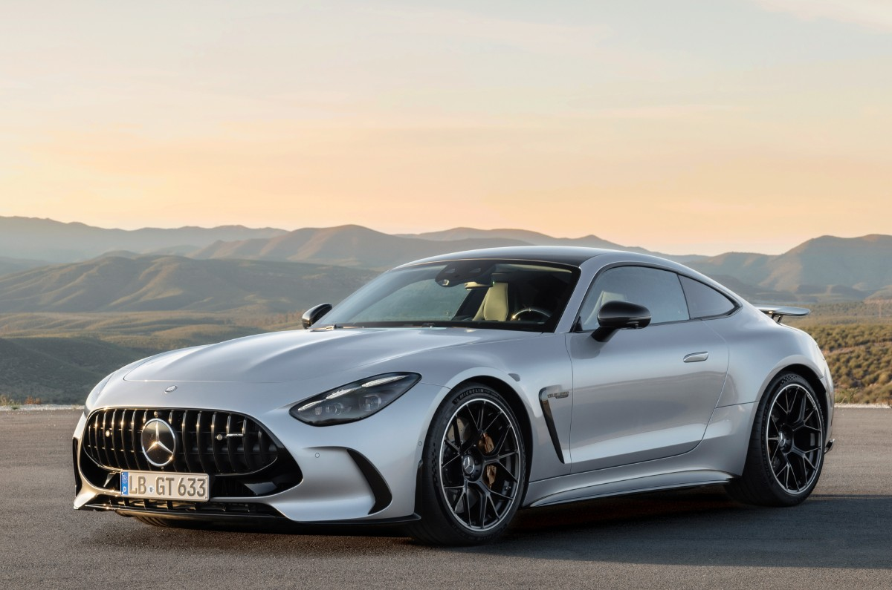

The Mercedes-AMG GT is a high-performance luxury sports car from Mercedes-AMG that fuses breathtaking power, advanced engineering, and striking design to deliver an exhilarating driving experience on both road and track. Introduced by Mercedes-AMG as a direct competitor to iconic sports cars, the AMG GT features a handcrafted AMG 4.0-liter twin-turbo V8 engine paired with a precision automatic transmission and available AMG Performance 4MATIC+ all-wheel drive, producing immense horsepower and torque that propel the car from 0 to 100 km/h in around 3.2 seconds with top speeds exceeding 315 km/h in its most potent variants. Its bold exterior showcases a long hood, wide stance, aerodynamic body sculpting, and the signature Panamericana grille, creating an aggressive yet elegant profile that captures attention wherever it goes. Inside, the AMG GT’s cockpit combines premium materials with cutting-edge technology, including large digital displays, performance-oriented instrumentation, and multiple driving modes that let drivers tailor the throttle, suspension, and steering for comfort or sport-focused precision. Whether in its classic two-door coupe form or in higher-output hybrid-assisted variants like the AMG GT 63 S E Performance with an electrified powertrain, the Mercedes-AMG GT stands as a modern benchmark in performance sports cars, blending race-bred dynamics with everyday usability and luxury.